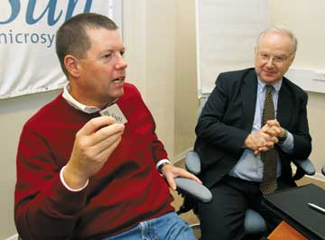

11 ноября 2005 г. санкт-петербургский офис Sun Microsystems (http://www.sun.ru) с кратким визитом посетил исполнительный директор и председатель совета директоров корпорации Скотт Макнили (Scott McNealy). Визиты подобного уровня в большинстве случаев носят протокольный характер и призваны подбодрить местный персонал компании, придав новый импульс перспективным направлениям бизнеса. Именно так десять лет назад г-н Макнили побывал в Москве для того, чтобы подтолкнуть развитие бизнеса Sun Microsystems в России. Однако, помимо плановой встречи с сотрудниками исследовательского центра, Скотт Макнили уделил много времени и общению с прессой - в рамках специального брифинга, на котором присутствовали также глава представительства Sun Microsystems в регионе СНГ Жан-Поль Бергманс и директор Центра высоких технологий Sun Microsystems в Санкт-Петербурге Аня Барски, он в общих чертах изложил свой взгляд на стратегию Sun Microsystems в области исследований и инноваций и ответил на множество связанных с ней животрепещущих вопросов.
Мы предлагаем читателям ознакомиться с основными моментами этой беседы.

Скотт Макнили, исполнительный директор и председатель совета директоров Sun Microsystems, и Жан-Поль Бергманс, глава представительства Sun Microsystems в СНГ.
? Не кажется ли Вам, что ситуация на рынке сейчас сильно меняется - идет смещение интереса от непосредственно продуктов и их характеристик к проблемам, связанным с эксплуатацией этих продуктов?
Скотт Макнили: Да, пожалуй, так и есть. Например, сейчас очень популярно определение программного обеспечения как услуги. Наша компания в качестве основы для работы на этом направлении выбрала открытую стратегию - большая часть ПО, которые мы поставляем на рынок сегодня и планируем поставлять в будущем, опирается на концепцию open source и поставляется с открытыми исходными кодами. Более того, все наши программные продукты поставляются заказчикам бесплатно - мы не взимаем никакой платы за их использование. При этом все наши программные продукты снабжены встроенными средствами удаленного сбора информации, мониторинга, контроля и администрирования, имеют online-доступ к хранилищу исправлений и обновлений, в случае особой необходимости обеспечивают прямой непосредственный online-доступ технических специалистов из наших сервисных подразделений. В такой ситуации источник получения прибыли мы видим в контрактах на поддержку и обслуживание этого ПО, заключаемых с нашими клиентами.
Если же наши заказчики по каким-либо причинам не хотят или не могут устанавливать программные продукты у себя и работать с ними локально, они все равно могут воспользоваться их функциональностью посредством сетевых соединений, оплачивая доступ к услугам аналогично принципу коммунальных платежей. Мы сейчас активно развиваем необходимую для подобных сетевых вычислений инфраструктуру: так, в Соединенных Штатах создается GRID-система, на базе которой будет развернуто соответствующее решение, позволяющее продавать вычислительные мощности по цене один доллар за один процессорный час. Таким образом, заказчики могут вообще не покупать никакого аппаратного и программного обеспечения, а просто воспользоваться услугами нашей системы по означенной выше цене.
? При проведении подобных вычислений очень важен вопрос выбора адекватных решаемой задаче математических методов обработки информации. Каким образом решает эту проблему Sun?
С. М.: Мы очень четко понимаем эту проблему и подходим к реализации данной системы со всей ответственностью. Конкретная аппаратно-программная реализация будет включать в себя множество разнообразных блоков, обеспечивающих решение широчайшего спектра пользовательских задач. Например, совершенно точно можно сказать, что в системе будут использоваться компоненты и на базе процессоров Opteron, и на базе процессоров UltraSPARC. В целом заказчики смогут решать с ее помощью самые разные задачи, в частности, такие, как обсчет физических систем с помощью метода конечных элементов, математическое моделирование с использованием метода Монте-Карло, отрисовка движущихся изображений, в том числе кинематографического качества, моделирование молекулярных структур, анализ данных разведки нефтегазовых месторождений, анализ сейсмической активности и т. д. Мы будем открыты для всех, и наши ресурсы можно будет использовать для самых разных вычислений.
? Как Вы оцениваете ситуацию на российском ИТ-рынке? По Вашему мнению, есть ли в России какие-нибудь компании, которые Sun в перспективе могла бы приобрести?
С. М.: Даже если бы я и знал, я бы не мог сейчас сказать, кого мы могли бы рассматривать в качестве потенциального претендента на покупку, - такова практика бизнеса. Однако на данный момент на наших банковских счетах консолидировано около 4,5 млрд долл. свободных наличных средств, так что для приобретения интересующих Sun Microsystems компаний у нас есть практически все необходимое. По моему мнению, самая важная тенденция, которая будет обеспечивать дальнейшее развитие ИТ-индустрии в ближайшие годы, непосредственно связана с ростом и развитием сетевой инфраструктуры. Чем лучше будет складываться ситуация с широкополосным доступом в Интернет у пользователей, тем лучшие, в том числе с точки зрения бизнеса, перспективы будут открываться в смежных областях - в сфере ПО, особенно в отношении операционной системы Solaris и пакета StarOffice, многопоточных многоядерных процессоров Niagara и во многих других направлениях.
? В последнее время для активно растущего российского рынка все большую остроту приобретает проблема отсутствия достаточного количества квалифицированных и хорошо подготовленных специалистов, даже при том, что имеются достаточные средства на их привлечение. Не планирует ли Sun Microsystems обратить внимание на образовательную сферу России? Нет ли у вас каких-либо проектов по этой части?
С. М.: Совершенно верно. Причина, почему мы начинаем интересоваться той или иной страной с точки зрения возможности проведения там исследований и разработок, - это качество, масштаб, профессионализм локального научно-исследовательского сообщества. Если качество системы образования не будет поддерживаться на определенном уровне, это самым непосредственным образом негативно скажется и на наших центрах разработки. Поэтому мы стремимся вносить свой посильный вклад в поддержание и развитие локальной, российской системы образования, прежде всего материальный - предоставляя университетам бесплатное ПО и весьма привлекательные условия на приобретение нашего оборудования и сервисов, а также участвуя в финансировании совместных разработок.
? В мировом масштабе рыночная доля RISC-серверов постепенно уменьшается, а доля серверов на базе архитектуры х86, наоборот, растет. После долгих раздумий Sun Microsystems также обратилась к этой архитектуре и выпустила линейку серверов с процессорами Opteron компании AMD. Не кажется ли Вам, что в конце концов архитектура х86 вытеснит RISC в особые - вероятно, вертикальные - ниши и займет на рынке господствующее положение?
С. М.: Нет, я так не думаю. Прежде всего я хотел бы сделать некоторые пояснения относительно нашего бизнеса, связанного с серверами стандартной архитектуры х86, точнее, ее 64-разрядной ревизии х64. Продажи таких систем растут темпами, превышающими 100% в год. В результате этого среди всех основных игроков, присутствующих на рынке 64-разрядных серверов архитектуры х86, нам удалось подняться с 99-го места на четвертое. Однако в то же самое время очень быстрыми темпами росли и продажи - причем, что особенно важно, в штучном измерении, - наших систем на базе архитектуры SPARC. Со своей стороны мы подкрепляем этот интерес активными действиями - в 2005 г. мы досрочно выпустили на рынок уникальный многоядерный процессор Niagara, а также представили очередное обновление в нашем семействе - процессор UltraSPARC IV+.
Наконец, сейчас на базе архитектуры SPARC по специальному соглашению с министерством обороны США мы разрабатываем высокопроизводительный процессор, пригодный в том числе и для применения в суперкомпьютерах, с кодовым названием Rock. Как видите, перспективы RISC-процессоров не выглядят такими уж мрачными. Я полагаю, что места на рынке хватит всем - и системам на базе 64-разрядной архитектуры х64 (как в реализации AMD, так и в реализации Intel), и системам на базе RISC-процессоров с архитектурой SPARC.
? Никлаус Вирт, создатель языка Pascal, также недавно побывавший в Петербурге, высказал мнение, что одна из причин, почему независимые разработки в области программирования и в частности его язык, развиваются недостаточно активно, связана с желанием крупных компаний, таких, как Sun и Microsoft, продвигать и поддерживать лишь свои, подчас менее совершенные разработки. Что Вы думаете по этому поводу?
С. М.: Мне кажется, что это не так. Понимаете, это решаем не мы, это решает рынок. Я считаю, что сейчас инициатива в этой области перешла на сторону Интернет-сообщества. Большое значение приобретают частные блоги разработчиков, их сообщества и коллективы, объединяющиеся в весьма крупные проекты. Интернет здесь играет своеобразную роль разрушителя барьеров, устраняющего географическую разобщенность, барьеры часовых поясов, экономическое неравенство, превращая рынок в единый глобальный ареал обитания, который уже никакая отдельно взятая компания контролировать не может.
?Очевидно, что для успешной работы на российском рынке компании Sun Microsystems требуется некоторая инфраструктура - круг российских компаний-партнеров, помогающих вести локальный бизнес. Планирует ли Sun расширять круг российских партнеров и делать в ближайшее время какие-либо более-менее серьезные инвестиции в отечественные компании?
С. М.: На данный момент наша стратегия состоит в том, чтобы очень активно работать с местными партнерами таких категорий, как системные интеграторы, поставщики и подрядчики. Особенно активно мы будем работать в области исследований и разработок. В этом вопросе наш подход значительно отличается от подхода таких компаний, как IBM, которая стремится работать с заказчиками напрямую. Мы же готовы и предпочитаем опираться на локальных партнеров. Здесь также стоит отметить, что мы уделяем очень серьезное внимание развитию локальных кадров, с тем чтобы у нас были местные хорошо подготовленные ресурсы как среди руководителей и менеджеров, так и среди технических специалистов.
Что касается инвестиций, то замечу, что мы делаем огромные вложения в расширение работы с партнерами. Мы обеспечиваем их обучение и подготовку, реализуем программы совместного маркетинга, стимулирования спроса, брэндинга, осуществляем совместную разработку заказчиков и клиентов, помогаем в реализации проектов, предоставляем демонстрационное оборудование. Есть очень много направлений нашего сотрудничества с локальными партнерами. Более того, напрямую заказчикам мы вообще ничего не продаем - весь бизнес идет через партнеров. Если бы мы не занимались столь активной работой с локальными партнерами, нам бы не удалось сегодня достигнуть столь впечатляющих темпов роста и показателей.
? Вопрос относительно взаимоотношений Sun Microsystems с корпорацией Microsoft. Год назад все издания обошла Ваша фотография со Стивом Балмером. Изменилось ли что-нибудь с тех пор? Как в дальнейшем будут развиваться ваши отношения?
С. М.: В июне 2005 г., спустя примерно год после первых договоренностей, мы сделали еще одно объявление о целом ряде дополнительных соглашений, направленных на повышение совместимости наших продуктов. Среди объявленных соглашений можно выделить сертификацию наших систем на совместимость с ОС Windows, сертификация уже Windows на совместимость с нашими серверами на базе процессоров Opteron, лицензионное соглашение, позволяющее запускать Windows на наших тонких клиентах, соглашение о поддержке спецификаций Web-сервисов, обеспечивающих совместимость приложений Java и .NET.
? Хотелось бы узнать, как Вы оцениваете результаты открытия исходного кода операционной системы Solaris? Нет ли у компании аналогичных планов в отношении платформы Java?
С. М.: Результаты открытия исходного кода ОС Solaris 10 и запуска соответствующего проекта OpenSolaris превысили даже самые смелые наши ожидания. Начиная с февраля 2005 г. на одном только официальном сайте проекта было зарегистрировано более трех с половиной миллионов загрузок образа с операционной системой. Чтобы лучше ощутить значимость этого факта и представить его масштаб, приведу для сравнения данные по Solaris версий 8 и 9, которые вместе были загружены всего несколько сотен тысяч раз. Около 530 серверных систем, производимых сторонними производителями, никак не связанными с Sun, были сертифицированы на совместимость с Solaris 10. Единственная ОС, с которой совместимо большее количество серверов, - это Microsoft Windows. В долгосрочной перспективе мы полагаем, что на рынке останется две, может быть, три широко распространенные ОС - Windows и Solaris точно и Red Hat Linux - вероятно.
Касательно открытия исходных текстов можно сказать, что Java уже участвует в этом процессе - там открытие происходит посредством Java Community Process, в то время как у Solaris оно реализовано посредством лицензии CDDL, а у Red Hat Linux - посредством лицензии GNU GPL. Разумеется, у каждого из этих подходов и механизмов их реализации есть свои преимущества и свои недостатки, однако мы считаем, что на текущий момент Java Community Process работает очень хорошо и не требует никаких изменений.
? Каково же влияние open source-проектов Sun на ее бизнес?
С. М.: Сейчас, если вы занимаетесь созданием программ с открытыми исходными текстами и при этом не переходите на модель бесплатного распространения своих программных продуктов, это очень сильно ограничивает масштаб вашей аудитории, масштаб сообщества ваших заказчиков. Гораздо проще добиться признания результатов своего труда в виде материального денежного вознаграждения, работая с большой, массовой и разветвленной аудиторией, вместо того чтобы пытаться выудить эти деньги из малой обособленной группы заказчиков. Перейдя к способу разработки с использованием открытых исходных кодов и бесплатной модели распространения ПО, мы обеспечили нашим клиентам дополнительный способ снижения издержек их бизнеса, а значит, повысили свою привлекательность как поставщика решений и сервисов.
? Известно, что российский рынок довольно динамично растет, однако при всем при том его абсолютные показатели в мировом масштабе все еще весьма скромны. По мнению г-на Макнили, может ли российский ИТ-рынок при существующей инфраструктуре развиться до уровня, скажем, индийского или китайского в какой-то обозримый (15-20 лет) промежуток времени? Не потребуются ли для этого кардинальные изменения рыночной инфраструктуры?
С. М.: Вы знаете, предсказывать всегда трудно. Я вспоминаю, что где-то в середине 80-х годов прошлого века мы были абсолютно уверены, что Япония займет доминирующие позиции на ландшафте информационных технологий. Затем в течение определенного времени умы будоражила идея Европейского союза, казавшаяся таким замечательным средством от всех болезней старой Европы. Сейчас у многих очень высок уровень ожиданий, связанных с Индией и Китаем. Все течет, все меняется. Мне трудно предугадывать, какие перспективы ожидают в будущем Россию. Однако все необходимые для достижения серьезного успеха ингредиенты имеются в наличии - в России есть и трудолюбивый народ, и обилие разнообразных природных ресурсов, и великолепная система образования, и сформировавшаяся культурная ориентация на работу в рыночных условиях. Что же будет в реальности, я не знаю.
? Корпорация Sun Microsystems недавно купила довольно известного производителя систем хранения данных компанию StorageTek, потратив на эту сделку несколько миллиардов долларов. Хотелось бы узнать, как повлияет это приобретение на стратегию Sun в области систем хранения.
С. М.: Согласно статистическим данным, более 60% ежедневно создаваемых данных в итоге попадает в архивы. На данный момент около 36% всех архивированных данных в мире хранится на ленточных библиотеках, произведенных Sun. Среди компаний, оперирующих на рынке систем хранения данных, мы уверенно входим в четверку лидеров. Отличительная черта наших решений - в том, что в них реализована возможность объединения разнообразных компонентов в единый комплекс для сквозного управления вычислительной средой, средой хранения и процессами идентификации пользователей, а также обеспечения функций поиска. Именно поэтому наша основная перспективная цель связана со стремлением выйти за рамки компании, выступающей лишь как поставщик вычислительных средств, систем хранения и прочих компонентов, и стать поставщиком целостных решений, предоставляя заказчику все необходимое для того, чтобы развернуть и поддерживать эффективную ИТ-инфраструктуру предприятия.
? Sun Microsystems потратила очень много сил на маркетинг нового процессора Niagara задолго до его появления на рынке. Какие преимущества этого процессора, наиболее важные с точки зрения вашей компании, легко воспринимаются рынком и какие находят отклик с большим трудом?
С. М.: Не думаю, что среди ИТ-специалистов найдутся люди, которые не понимают того, что я говорю. У руководителей центров обработки данных все чаще возникают серьезные проблемы, связанные с нехваткой физического пространства для размещения все новых и новых серверов, с отсутствием достаточного количества мощностей для питания даже развернутого уже оборудования, не говоря о вновь приобретаемом, и с трудностями организации эффективной системы кондиционирования и охлаждения. Еще одна проблема, с которой сталкиваются руководители центров обработки данных, состоит в том, что им нужно иметь огромное количество аппаратных потоков обработки данных - на каждый сервер приложений, каждый Web-сервер, каждый запрос к базе данных, каждое голосовое соединение по протоколу VoIP или поисковый запрос нужен один, а часто даже несколько независимых аппаратных потоков обработки данных. Если, например, рассмотреть структуру затрат такой компании, как Google, то на втором месте, вслед за затратами на оплату труда служащих, идут расходы на оплату потребляемой электроэнергии. В этом ключе преимущества нашего решения очень наглядны - процессор Xeon на один вычислительный поток потребляет от 70 до 100 Вт, процессор Niagara - около 2 Вт. С точки зрения плотности размещения серверов одна система на процессоре Niagara эквивалентна 32 на процессоре Xeon.
Наконец, с точки зрения масштабируемости процессор Niagara - это огромный шаг вперед. При этом он обладает полной бинарной совместимостью с набором команд SPARC V9 и, как и все наши прошлые обновления, не требует оптимизации или перекомпиляции исходных кодов ПО. Фактически заказчики могут исполнять на нем даже приложения, написанные семь-восемь лет назад, ибо с тех пор Sun Microsystems ни разу не нарушила совместимости кода, работающего в рамках платформы SPARC/Solaris. Полагаю, что с этим решением мы как минимум на несколько лет обогнали конкурентов.